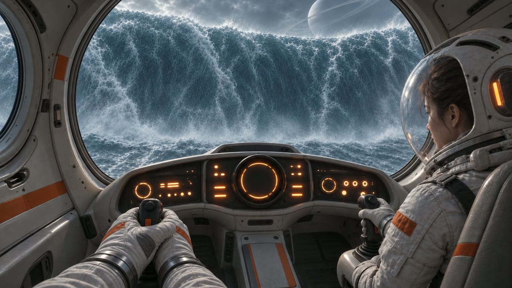
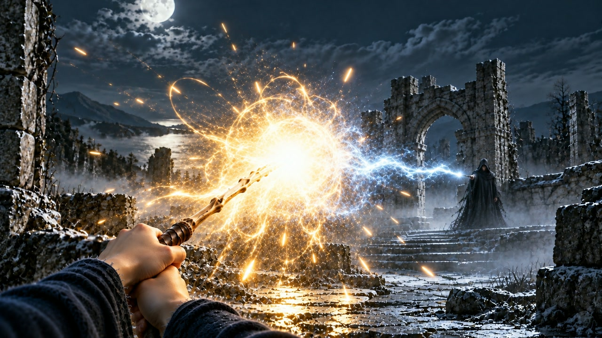
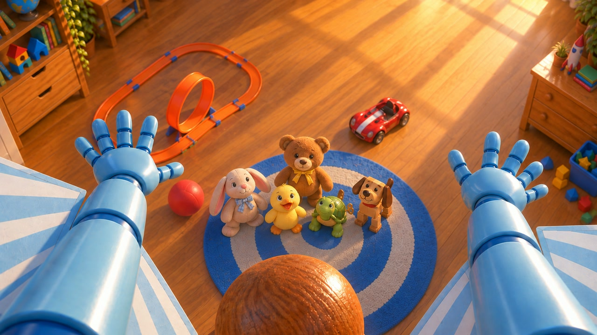
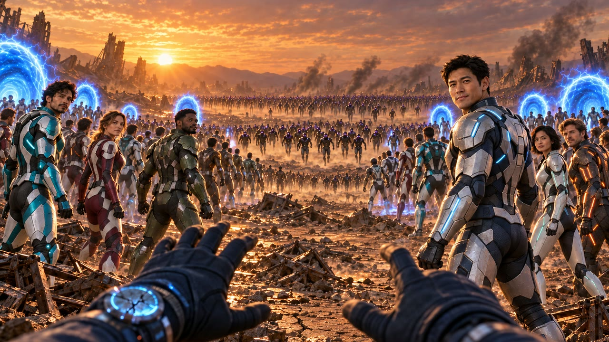
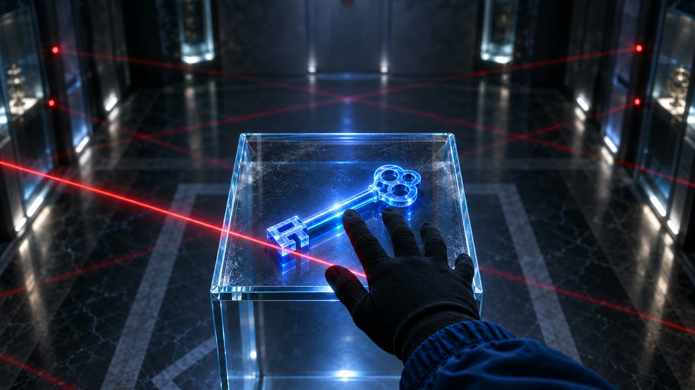
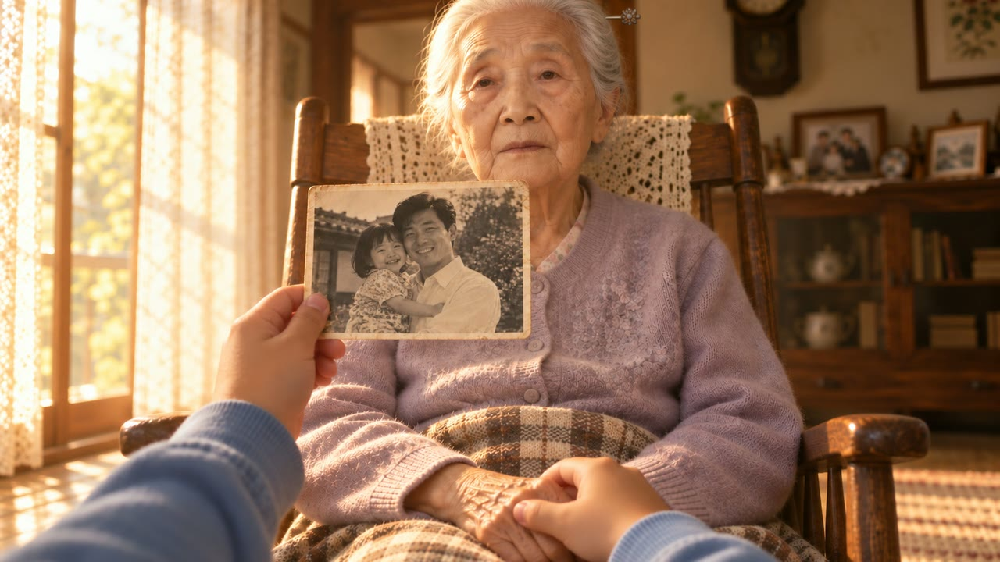
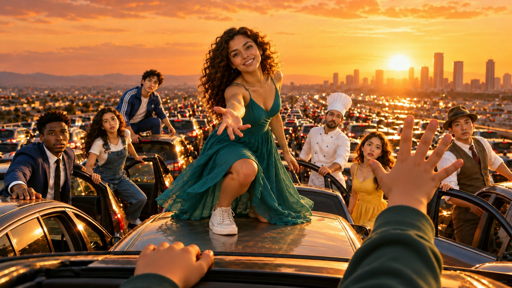

제4회 인천어린이청소년영화제 · InKY 놀이터 체험 부스 · 2026. 11. 14.(토) CGV 인천
학생이 10초 장면 하나를 골라 5초에 장면이 멈추면 3.5초 동안 주인공이 되어 외치는 더빙 체험입니다. 장면 8편은 유명 영화의 한 순간을 떠올리게 하는 새 장면으로 만들었고, 원작의 인물·의상·로고·음악·대사는 쓰지 않았습니다. 앱 화면과 영상에는 원작 이름이 나오지 않습니다. 아래 그림은 장면마다 학생이 외치는 순간(5초에 멈춘 화면)입니다.







| 장면 | 떠올리게 하는 원작 장면 | 상대의 한마디 | 원작과 다르게 만든 점 |
|---|---|---|---|
| SF «물의 행성» | 인터스텔라 — 물의 행성에서 «산»이 파도로 드러남 | «저 산… 움직여 !» | 블랙홀 대신 고리 행성, 원작 우주선·우주복 모양 안 씀, 다치는 장면 없음 |
| 판타지 «빛의 결투» | 해리 포터와 불의 잔 — 두 지팡이 광선의 결투 | «나와 겨루겠다고 ?» | 묘지 대신 폐허 정원, 원작 인물·옷·주문 안 씀, 누구도 다치지 않음 |
| 애니메이션 «멋지게 떨어지기» | 토이 스토리 — 침대 기둥에서 뛰어내려 방을 도는 장면 | «장난감은 못 날아 !» | 원작 캐릭터 대신 장난감 로봇과 곰 인형, 원작 대사 안 씀 |
| 히어로 «왼쪽을 봐» | 어벤져스: 엔드게임 — 동료들이 하나둘 도착하는 장면 | «왼쪽을 봐. 우리가 왔어 !» | 원작 히어로의 얼굴·옷·방패·로고·대사 안 씀, 전투 없이 빛으로 마무리 |
| 스릴러 «레이저 금고» | 미션 임파서블 — 천장 줄에 매달려 금고실로 내려감 | «레이저 바뀐다, 천천히 !» | 무기·경비원·싸움 없음, 긴장은 «경보»뿐, 아이는 손만 나옴 |
| 드라마 «기억의 한마디» | 코코 — 손주의 한마디에 할머니가 기억을 되찾음 | «이제… 아무도 몰라보셔.» | 노래 대신 아이의 진심 한마디, 원작 가족·마을·상징 안 씀 |
| 스포츠 «마지막 슛» | 더 퍼스트 슬램덩크 — 마지막 몇 초의 패스와 슛 | «너한테 맡긴다 !» | 원작 학교·유니폼·등번호·인물·명대사 안 씀 |
| 뮤지컬 «서커스 첫 무대» | 특정 원작 없음 — 서커스 뮤지컬 분위기 | «쇼는 계속되어야 해 !» | 특정 영화의 장면·의상·노래 안 씀, 동물·채찍 없음 |
함께 보내는 것: 장면 영상 8편(각 10초, mp4). 체험 주소 https://voice.edutogether.kr · 원본 _docs/ops/print/review-summary.html